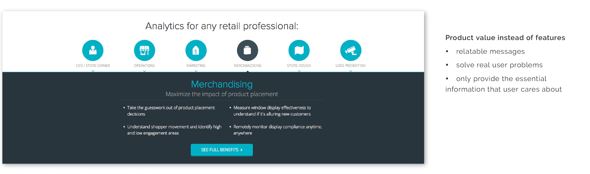
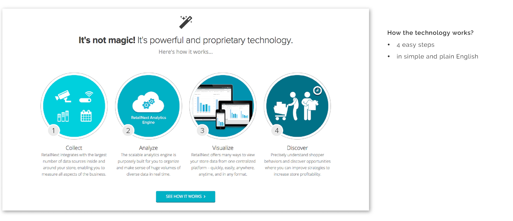
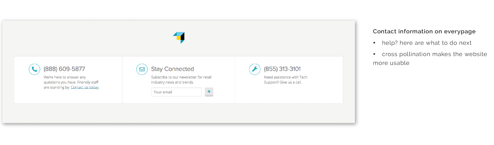
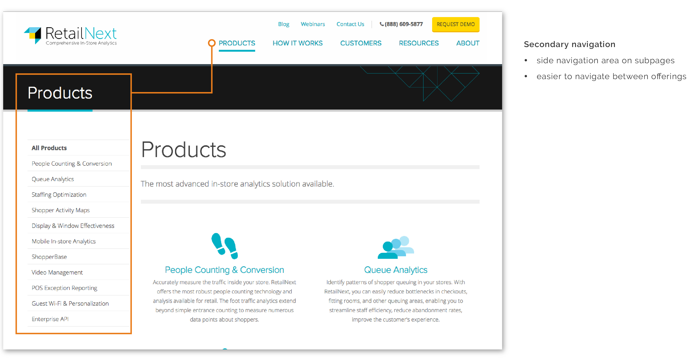

RetailNext
The challenge
Rebrand and redesign retailnext.net
The scope
4 months, 1 designer, 1 marketing manager and 1 design agency.
My role: information architecture, UX, web and graphic design
As the in-house designer, I worked closely with the Marketing and Product teams, conducted user research, interface evaluation, produced detailed wireframes, mock-ups and visual assets, and brought the new website to life with the help of an out-source digital agency.
Results
The new website launched in March 2014, we then saw:
157% increase in daily site traffic
3% increase in time spent on the site
14.4% increase in organic search
What I learned
UX design research
Communicate efficiently across departments
Conceptual model design
Information architecture
Understanding the users
I approached the problem by understanding my target audience - both users and buyers. Through communicating with sales and product managers, 6 personas and what they care about were defined.
Target audience
RetailNext aimed to market towards small to medium retailers and generate new customers via the website. The target audiences are business operators who need a big data solution to collect, analyze and visualize in-store data. They are price sensitive, and want to optimize their marketing and capital expenditures.
The pain points
With the target audience in mind, a journey map was made to understand a store manager's emotional experience when interacting with Retailnext.net. There're two major pain points:
Pain point 1: I don’t know how RetailNext's offerings can help my business.
Right now, the website failed to communicate the product value and guide the visitor to the information they need. As the result, only a small number of site visitors got to the Inquiry stage.
Pain point 2: I’m interested, what to do next?
The conversion rate of the website was low, user can't even find the contact information. Therefore, call-to-action needs to be made loud and clear.
Interface evaluation
After a detail expert review on the interface, It was found that the biggest problem with the website is the structure and navigation. Also, the content is too technical. The message needs to be in plain English and communicate real product value.
Card sorting
To design a better conceptual model for the site, I conducted a series or card-sorting exercises. Participants were chosen randomly from the company employee directory. Two of the participants had no domain knowledge about RetailNext technologies. Through these exercises, I’m able to better organize and label navigation items, and employ the most logical structure for the new company website.
The new look
After a few rounds of iteration, the design was approved. I worked with the design agency, designing the look and feel and creating visual assets. In January 2014, the final look was brought to live!
Design decisions
With each iteration, I improved the design based on the findings during user research and feedbacks from stakeholders, here are some key design decisions I made.
1. Tell a story
Features need to solve real user problems in order to make an impact. The marketing messages are framed using personas and things they care about, making these messages more relatable and actionable.
2. How it works, in plain English
RetailNext provides a comprehensive and highly versatile platform and many customizable solutions. Explaining how RetailNext works in simple language is crucial on the home page.
3. Call-to-action
By making the call to action more prominent, we are encouraging users to take the next step. The call to action section is consistent on every page.
4. Efficient navigation structure
Positive use of cross-pollination makes the website easier to navigate.
The result
The new website received many positive feedback from both users and stakeholders, and the result was stunning.
Daily site traffic increased by 157%.
Time spent on the site increased by 3%.
Organic search increase by 14.4%.
note: results were calculated based on the web traffic report, Apirl 2014
What I learned
Get out of the comfort zoom and learn something new
In school, I was trained to be an art director and graphic designer, I’m good at designing a visually appealing websites. However, with this project, due to the project time-frame and lack of resources internally, I had to outsource the high fidelity visual design and web development. I taught myself how to drive a design project and conduct UX research. I paid close attention to creating a cohesive web experience, that delivers the right message to the right customers. I learned to communicate effectively with different parties, gather insights and make trade-offs.